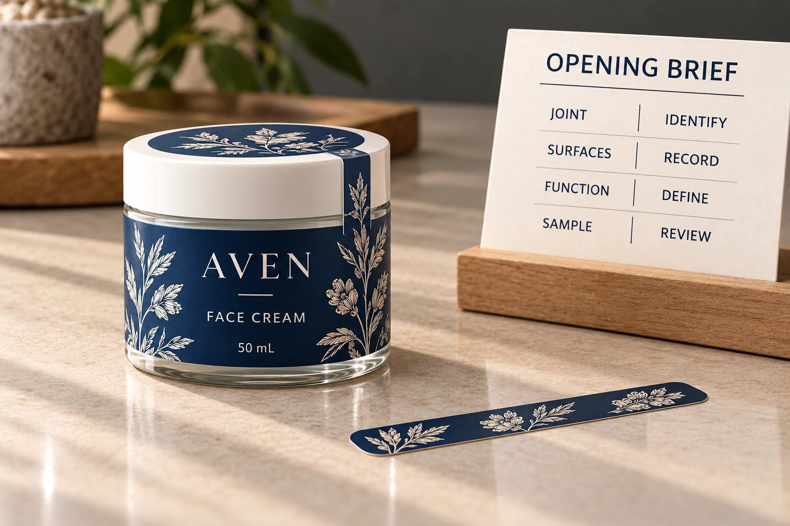

Give the component one primary job
Write the intended function in ordinary language. A presentation label might connect two package surfaces visually. A closure label might hold a flap in the intended position. A reclosure component has an access task after the first opening. An opening-evidence feature needs an agreed observable result.
Do not let the word seal carry the entire specification. Ask the brand's responsible packaging team which function the project requires and how it should be assessed. Where product or market requirements apply, that team must approve them separately.
Our cleansing balm jar guide already distinguishes a decorative label from a separately briefed opening component. Here the task is building that separate brief, rather than extending the side artwork over the lid and assuming it becomes a functional seal.
Identify both surfaces and the opening path
Show the actual joint on the closed pack, then show how it moves during intended opening. Record the materials and finishes on both sides of the proposed label. A coated lid and a decorated jar body are not necessarily the same adhesive application.
Identify corners, recessed areas, ridges and the area available for contact. Ask the production supplier for a proposed construction and the packaging operator for its application requirements. Do not set a universal strip width or contact area from a photograph.
Also establish where the component is applied in the packing sequence. A label applied before another operation may experience different handling from one applied at final packing. The brief should describe the actual sequence, including any uncertainty that needs a sample review.
Compare reclosure and opening evidence deliberately
HERMA's closure-label overview describes constructions with differing adhesives, adhesive zones, grip features and perforations. It also distinguishes repeated resealing and tamper-evident applications. Those are technology examples, not proof that any generic branded strip provides a validated security outcome.
If repeated access is required, ask what the proposed construction is designed to do and which evaluation is appropriate. If evidence of first opening is required, ask what observable change should occur and under which agreed conditions it will be reviewed.
These requirements may lead to different proposals. An easily reclosed label should not be assumed to preserve evidence of an earlier opening. Conversely, an intentionally disruptive opening feature may be unsuitable for a brief centered on convenient repeated access.
This guide does not claim that YT Labels supplies every cited technology, that a feature prevents all interference, or that an illustration establishes product authenticity.
Agree the sample question before judging the result
If the brief also calls for a holographic visual, a serial field or a QR verification path, RP Labels’ holographic security-label planning guide covers that separate design discussion. RP Labels is another site in our owner’s portfolio. An optical feature or printed code does not replace the opening-behavior review described here or establish product authenticity by itself.
Specify what an appropriate sample needs to represent: the actual surfaces, proposed construction, placement and application sequence. Have the relevant technical party define the conditions and acceptance criteria.
Review the identified sample through the intended opening task. Record what happened at the joint and on each surface, and whether the intended result was observable. An unexplained photograph of a torn strip is not enough to know which construction, handling or opening event produced it.
If the result is unclear, retain that uncertainty and ask for the next evaluation. Do not turn a single informal opening into a universal performance claim. A sample can support a defined project decision while leaving other conditions unassessed.

Use an opening brief that different teams can read
Keep the brand, label printer and receiving operator aligned with one record:
| Field | Information to obtain | Decision it supports |
|---|---|---|
| Primary function | Closure, repeated access, opening evidence or presentation | Prevents different teams approving different jobs |
| Joint and movement | Named parts, opening direction and package reference | Defines where the component works |
| Contact surfaces | Material, coating and relevant supplier references | Identifies the actual application |
| Construction proposal | Label reference, intended features and placement | Connects the sample to the quote |
| Evaluation | Conditions, observable requirement and responsible reviewer | Defines what evidence can support release |
| Packing sequence | Who applies the component and at which stage | Includes the operator's requirements |
| Release and limits | Accepted scope, unresolved issue and approved revision | Prevents an informal observation becoming blanket approval |
The table is an editorial handoff aid. It supplies no universal security criterion, opening force or required legal feature. Missing answers remain pending until the responsible parties resolve them.
Allow the simpler arrangement to remain
Consider a hypothetical cream jar whose approved packaging needs only a decorative body label. Keeping that label clear of the opening joint may meet the brief. An extra strip can add an application task without providing a required function.
A different project has an explicit opening-evidence requirement. It needs a suitable proposed construction, applied sample and defined acceptance process. That is a reason to investigate a functional component, rather than to rename the decorative strip after the artwork is finished.
For a pack designed around repeated access, compare the wipes tub and reclosure distinction. A mechanical lid, a reclosure label and an opening-evidence label should not be treated as interchangeable components.
Send the function before requesting the finish
For a cosmetic label inquiry, provide the assembled container, joint details, surface references, artwork and quantity by component and design. Explain the intended opening behavior, application stage and the specific evidence still needed.
Use the inquiry form to prepare the message, then send drawings and references by email or WhatsApp. The form does not upload attachments. Ask which currently available construction can be evaluated against that brief before deciding whether the strip should look matte, clear or metallic.